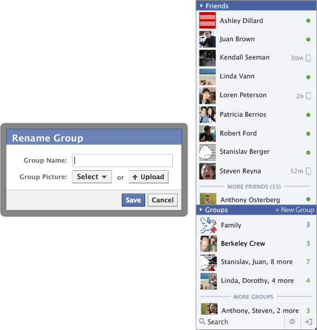

Abstract
No existing system truly understands who our closest social groups are, yet we interact with these groups all the time whether it's through email, texts, or video chats. By leveraging the data of a person's group interactions, we can figure out who their closest groups are. We can then create a more meaningful and personal experience by presenting this in an interface that reduces barriers to richer communication such as video chats and chatrooms.
Background - Our Relationships Are Losing Meaning
"Facebook strengthened my ability to forge countless "weak ties" at the expense of fewer, but stronger, relationships." - Kate Oslo
We live in an age where we are bombarded with an abundance of information from all of our social connections. Platforms such as Facebook and Twitter enable us to connect with anyone and everyone. While this advancement in technology has been great, it has also led to negative consequences.
On Facebook, the threshold for being a "friend" is generally very low. As a result, people are broadcasting to a very large audience and regularly reading about people they have very little connection to. What was supposed to be a meaningful social experience ends up being just the opposite.
In 2010, Moira Burke performed a study on social network activity and social well-being with about 1193 participants. She found that "Users who consume greater levels of content report reduced bonding social capital (emotional support from close friends) and increased loneliness."
For our final project, we really wanted to design a solution that strengthened meaningful relationships. We wanted to shift the focus from consumption of impersonal information to actually talking with friends. For our solution, we explored an area with a lot of problems today: social groups.
The Problem - Social Groups Today
1) Today's social networks are poor at forming and maintaining group interaction.
Most group conversation over networks today occurs over asynchronous text communication. Some examples of this are email, Facebook messages, and text messages.
Within all of these systems, there is a lack of organization. Messages are generally sorted by what's most recent, with no sense of understanding which groups are important. As a result, important groups get buried and users must often create a new list of people when they want to message a group. Email is especially problematic, as it gets cluttered with other things such as work or newsletters.
2) Group organization systems do not capture social groups well.
Most attempts to organize rely on the user to create their groups. One example of this is Facebook groups. These do not accurately capture a user's social groups, because groups are incredibly complicated. Groups can overlap or have subsets. In addition, groups can change over time as friends come and go.
Instead of capturing the friends that matter most, these group systems tend to be better at capturing organized or closed groups, such as school clubs.
3) It takes too much effort to have meaningful group conversations.
As I mentioned earlier, most conversation occurs over asynchronous text communication. More meaningful forms such as chat rooms and video chats have too many barriers to entry.
Consider trying to start a chat room with a group. Since buddy lists do not have a good social group structure, the user must search for every member of a particular group to see if they are available. In addition to being difficult, this is often a failed task (not finding the right people). This discourages spontaneous synchronous conversation and encourages the user to default to asynchronous group messages.
Because of this difficulty, a lot of synchronous group communication is planned. This planning takes a lot of work. Consider how much work it can take to have a Google Hangout. First, someone must initiate the motion and message everyone in a group to see when they are available. Then they have to schedule a time to chat. Depending on availabilities of group members, this scheduling task could be difficult. Finally, everyone must remember to be available at that time. The amount of time and effort it takes to do a Google Hangout discourages it from happening.
Our Goal
We want to design a user interface that better facilitates group interactions. By doing so, we hope to increase the amount of group interaction and bring people closer together.
Research - What Is Social?
Our research mostly consisted of interviews. We first tried to ignore everything about existing systems and looked at social at its core. We asked people who their most important groups were and dug into each group. We asked about the dynamic of the each group, how they came about, and what their interactions were. After digging into their social world, we also asked how technology fit into their social life. Here are our top three findings:
- Most people message their social groups in one way or another. Most of our participants used email, text messages, or Facebook messages.
- Manual group systems do not accurately capture a user's social groups.
- Many participants revealed that their time spent on Facebook or Twitter was not very meaningful.
The Solution
1) Identify a user's social groups
The first finding is the key to our solution. The data for understanding intimate social groups is already out there. Since most people message their social groups, we can identify a user's most important groups by leveraging the data of these interactions. We can get a sense of a user's important groups by looking at the volume of their interactions and recency of their interactions. Let me explain.
First, a group that talks a lot is probably important. However, if a group has not interacted in a while, this could be a decaying group. For example, a group of high school friends might have interacted a lot at one point, but they might have stopped talking after high school. Also, a very recent group with little interaction might have potential to grow into something more. By developing "hot" algorithm with these two variables, we can determine which groups are most important.
2) Design to encourage group interaction
The second part of our solution is to design to encourage group interaction. First, after we've determined which groups are most important, we want to put the most important groups in close sight. By being very visible, users will be encouraged to interact with these groups more. Second, we want to display group member availability. By quickly showing who is available in each group, we hope to leverage availability as a trigger to initiate group chats. I will elaborate on this later.
Implementation
When implementing our solution, we wanted as much group interaction data as possible (such as message). The more of these interactions we have, the more accurate our solution is. Because of this, user fragmentation between systems is counterproductive to the goal. So instead of a new platform, we looked at existing systems.
We ultimately decided that Facebook best fits our needs. Google wasn't ideal because Gmail is cluttered with non-social content, and integrating Gmail with Google chat would not be as clean of a solution.
Prototyping and Testing
First, we made some paper prototypes. This allowed us to quickly iterate and flush out the idea.
Next we created some high fidelity Illustrator prototypes
Next, we did some user testing with our Illustrator prototype. We printed each window on paper and marked clickable items. After some explanation, we let the users explore through the interface as we guided them. We asked them to speak their thoughts as they explored. We uncovered several usability issues, which we touched up for our final prototype.
The Final Prototype

This is how we imagine the solution would work in Facebook. This is the Facebook buddy list, but it has been split into two sections: individuals and groups. This user has established groups from previous interactions, and the most important groups appear first. The buddy list attempts to balance the ratio of individuals and groups. This ratio will vary per person, since some people interact with groups more than others.
To create a new group, just send them a message. The idea is that we want to capture natural interactions and un-formalize the group creation process.

The green number to the right of each group shows how many people are available within that group. You can hover over these groups to quickly see who these people are. If you want to chat with these people, it's just a click away. If you'd prefer to message the whole group, you could do that too.

Different groups have different dynamics, and this affects how they communicate. For example, you may want to video chat with family, voice chat while playing a video game with friends, or text chat with a larger group of friends. You can choose which mode of communication to use here. This system then defaults to whatever mode was last used for each group.
A group may have started a chat session while you weren't present. If you log on while one of your groups is chatting, a blue number will appear instead of the green number. This blue number represents how many people are currently chatting. Quickly see who's chatting and instantly join their conversation. The grayed out Video button indicates that they are currently video chatting.
Here are four functions we provide for groups. We have found that while interactions such as messaging captures most important groups, it does not capture them all. Here, the user does not talk to family that often, but has pinned them to keep them at the top of their buddy list. Pinning groups allows for manual intervention for important groups that are not captured.
By default, the group shows a collage of profile pictures and lists names. Rename the group and change its picture to establish its identity. In this buddy list, the Family group has a name and a picture.
Conclusion
We believe that this added support for intimate social groups will be able to shift some of the social focus to people that actually matter to you. We hope this gets people talking again and strengthens meaningful relationships.